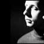

|
Scanner's
diverse body of work includes soundtracks for films, performances,
radio, and site-specific intermedia installations. He has performed
in and created works for many art spaces, including San Francisco
MOMA (USA), Hayward Gallery (London), Pompidou Centre (Paris),
Tate Modern (London) and the Modern Museum (Stockholm). His CD's
are available for purchase at http://www.posteverything.com/bette
Rebekah Farrugia is a Ph.D. student in the department of Communication Studies at the University of Iowa. Her research interests focus generally around the intersections between women, popular music, and technology.
*Get the Adobe Acrobat Reader here
|